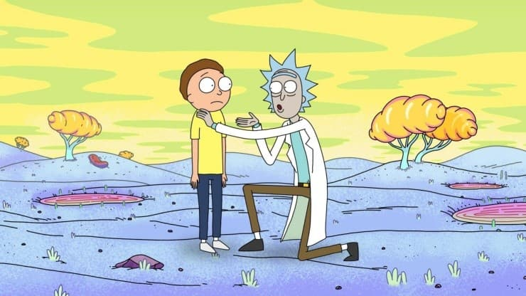

Noticias de Rick And Morty
Rick and Morty: se estrenan los episodios 9 de la quinta temporada.

Rick and Morty ha sabido ganarse su lugar entre los grandes títulos de animación en los últimos años, y es por eso que al día de hoy cuenta con millones de fanáticos en todo el mundo. La serie fue uno de los grandes atractivos del servicio de streaming HBO Max al momento de la promoción en su llegada a Latinoamérica, donde contamos con ocho episodios de su quinta temporada. ¿Cuándo llegan los dos capítulos restantes?
Rick and Morty: la mega estrella que rechazó ser parte del live-action
Antes del final de la quinta temporada, Rick and Morty revolucionó internet con un corto teaser. Christopher Lloyd y Jaeden Martell interpretaron a los personajes y muchos comenzaron a especular con la posibilidad de ver un live-action de la serie de Adult Swim.
Este viernes internet perdió la cordura cuando Adult Swim compartió un teaser de Rick and Morty fuera de lo que acostumbraba. En lugar de las tradicionales animaciones del dibujo animado creado por Dan Harmon y Justin Roiland en 2013, en Twitter aparecieron dos actores muy conocidos que se encargaron de darle vida a una versión alternativa de los protagonistas del show. Se trató de Christopher Lloyd y Jaeden Martell.
¿Se viene el live-action de Rick and Morty? El video que ilusionó a los fans

La serie animada que crearon Dan Harmon y Justin Roiland en 2013 se prepara para el final de su quinta temporada. Este domingo se emitirá el décimo episodio, pero el season finale quedó opacado por un inesperado teaser de Rick and Morty.
Rick and Morty se convirtió en una de las comedias animadas del momento. Con tan solo cinco temporadas en casi una década de vida, la ficción que crearon Dan Harmon y Justin Roiland se prepara para el final de su entrega actual. Sin embargo, en las últimas horas un video comenzó a circular por las redes y opacó el season finale de la serie.
Fortnite: confirmado el crossover con Rick y Morty
Epic Games está presentando la séptima temporada de Fortnite con algunas novedades muy interesantes. Una de ellas es la llegada de ovnis al campo de batalla. Los jugadores deberán tener cuidado de no ser abducidos en medio de su partida. También un lavado de cara en el que las armas más primitivas irán dejando lugar para elementos futuristas, dando a entender que el juego está cambiando de época.
Se viene el spin-off de Rick and Morty que parodia a los Avengers de Marvel

Rick and Morty agigantará aún más su leyenda porque Adult Swim trabaja en un spin-off para expandir su universo. La famosa serie animada para adultos se prepara para salir a la cancha con otra producción basada en sus personajes y, fiel a su estilo, traerá polémica por lo provocador de su enfoque: será una parodia de los Avengers de Marvel.
The Vindicators será el nombre de este programa corto que se lanzará a través de una plataforma digital y que constará de entre ocho y diez episodios de duración indeterminada. Obviamente el científico loco y su compañero adolescente no estarán como protagonistas, sino que en su lugar estarán unos personajes que ya fueron presentados en la tercera temporada.